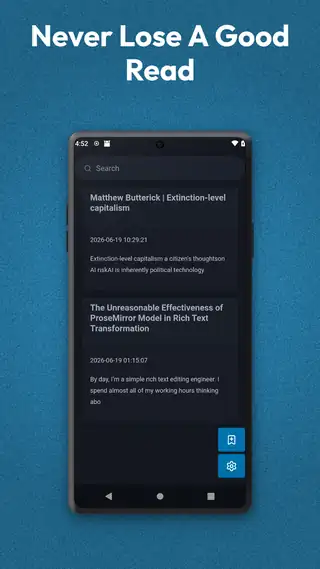

للقراءة لاحقاً
إنترنت ومتصفحات
أبداً لا تفقد مقالة مثيرة مرة أخرى. Read Later هو مدير الإشارات المرجعية الشامل الذي يجعل القراءة والتعلم سهلين. سواء وجدت منشورًا مدونيًا رائعًا أثناء تنقلاتك أو مقالة طويلة في وقت متأخر من الليل، احفظها فورًا واستهلكها حسب شروطك. نجمع بين تجربة قراءة نظيفة خالية من المشتتات مع ميزات إمكانية الوصول
✓ ترخيص مفتوح (MIT) · آخر تحديث: 2026-11-09
0.1.104الإصدار
15.2 MBالحجم
MITالرخصة
Open in Kanzتحميل APK (15.2 MB)
Download APK
SHA-256: aa03c2ee742a02045cfa64305cb15e0cbaf1004e2f11c8275529a7f42dfa5b67

امسح الكود لفتح صفحة التطبيق
Scan to open this app page
لو كنز مش متثبت عندك: نزّل متجر كنز.
Not installed? Get the Kanz store.